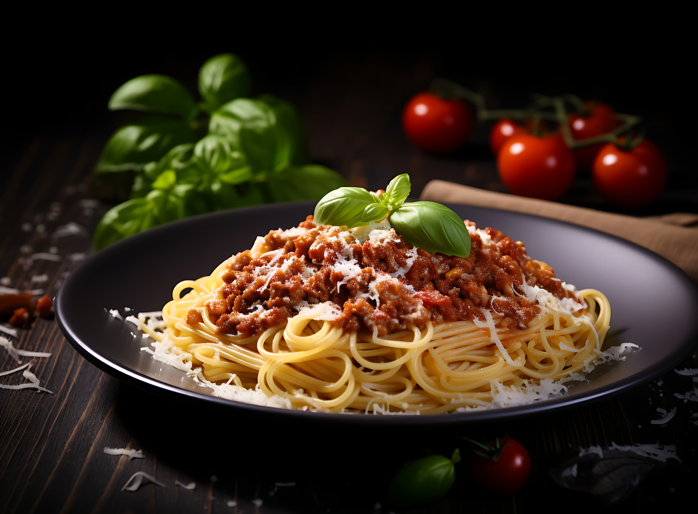

Spaghetti Bolognese

Description
Spaghetti Bolognese is a classic Italian pasta dish made with spaghetti served in a rich,
slow-cooked meat sauce. The sauce combines ground beef, tomatoes, onion, garlic, and herbs,
creating a flavorful and comforting meal that’s popular for family dinners.
Ingredients
- Spaghetti
- Ground beef
- Tomato sauce or crushed tomatoes
- Onion
- Garlic
- Olive oil
- Salt
- Black pepper
- Dried oregano or basil
- Parmesan cheese
Steps
- Cook spaghetti in salted boiling water until al dente, then drain.
- Heat olive oil in a pan, sauté onion and garlic, then add ground beef and cook until browned.
- Add tomato sauce, salt, pepper, and herbs. Simmer for 20 minutes.
- Serve sauce over spaghetti and top with Parmesan cheese.
Home